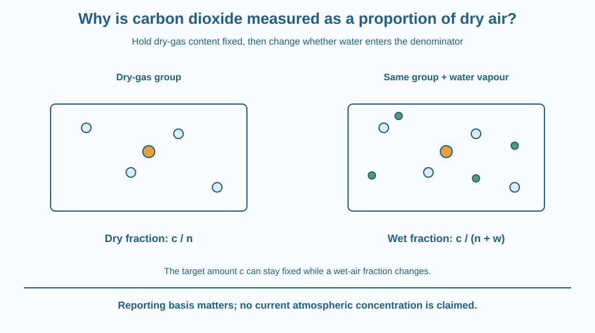

Explain why gas-composition reports may specify a dry-air basis. Distinguish the amount of carbon dioxide from the denominator used to express its proportion. Use a symbolic parcel model to show how changing water vapour can alter a wet-air fraction without changing the dry-gas comparison.
Two gas-composition reports appear different, but one includes water vapour in the denominator and the other removes it from the comparison. Their numbers cannot be interpreted fairly until the basis is known.
A proportion can change because the target amount changes, because the total used as denominator changes, or both. Humidity creates an important example of the second possibility.
The question is a measurement convention rather than an explanation of greenhouse warming. We track what is being counted and divided, not how the gas interacts with outgoing infrared radiation.
A gas fraction compares the amount of a component with the amount of a defined total. In a molecular or molar description, the numerator can represent carbon-dioxide molecules or moles, while the denominator represents the included gas mixture.
A wet-air fraction includes water vapour in that total. A dry-air fraction excludes water vapour from the denominator. The term dry basis describes the reporting reference, not a claim that the actual outdoor atmosphere contains no water.
Let a model parcel contain c units of carbon dioxide, n units of total dry gas including that carbon dioxide, and w units of water vapour. Its dry fraction is c/n. Its wet fraction is c divided by n plus w.
If c and n stay fixed while w increases, the wet denominator grows and the wet fraction falls. The dry fraction remains unchanged. That mathematical change does not mean carbon dioxide was chemically removed from the parcel.
Parts per million, or ppm, expresses a proportion scaled by a million. The basis must still be specified. A ppm label alone does not tell the reader whether water was included or whether the quantity is a mole fraction or a different reporting measure.
Instrument methods may dry a sample or correct for water effects and the reporting basis. The implementation varies. The conceptual requirement is to know what the reported ratio represents before comparing observations.
Humidity is not the only source of real variation. Carbon dioxide can genuinely change with sources, sinks, mixing and location. Normalising the denominator does not erase those physical changes or make every sample equal.
This lesson deliberately gives no current atmospheric concentration or trend statistic. Its symbolic model is timeless arithmetic. A real contemporary value would need a dated source, measurement context and reporting basis, rather than an invented number inserted to make the explanation look current.
Draw a fixed group of dry-gas symbols containing a few marked carbon-dioxide symbols. Count the target and total dry group. Then add a separate set of water-vapour symbols without removing any dry ones.
Calculate the two ratios symbolically. The target count stays fixed, but the wet total increases. The dry comparison intentionally holds the humidity component out of its denominator.
Now add more carbon-dioxide symbols instead of water. Both appropriate fractions can change because the target itself changed. Comparing these two manipulations makes it clear that normalisation distinguishes one source of variation; it does not declare all observed variation artificial.
The SVG shows identical dry-gas groups with different added water-vapour amounts. Carbon-dioxide symbols remain the same in the first comparison. Separate fraction labels show c/n and c/(n+w).
A second small arrow adds target gas and identifies that as a real numerator change. The diagram uses symbol counts only and does not represent a measured atmospheric composition or a present-day concentration.
Labels emphasise denominator choice and the need to specify units and basis. No greenhouse-energy arrows appear, keeping this topic distinct from the infrared mechanism reserved for a later lesson.

Scientific gas reports often include qualifications that seem small but determine whether numbers are comparable. Dry-air basis is one example of a denominator convention with a practical purpose.
In India, humidity can vary greatly across locations and weather conditions, but this lesson does not supply a regional humidity statistic. The model simply explains why a changing water component can complicate an unqualified gas-fraction comparison.
A school discussion should inspect the reporting description before comparing values from different instruments or sources. Agreement in the word ppm is not enough if the quantities or bases differ.
Use paper and three colours for target gas, other dry gases and water vapour.
Use abstract counts rather than claiming a current atmospheric value. The activity demonstrates ratio logic, not a chemical measurement or a climate trend. Do not collect breath samples or purchase a sensor to complete the paper model.
Why can a falling wet-air fraction occur without a loss of target molecules in the chosen comparison? Name the denominator change explicitly.
Now imagine the target amount rises while water vapour also changes. What information would be needed to separate those effects? A normalised report helps interpretation but does not replace a complete understanding of the measured parcel and procedure.
What does dry-air basis exclude from the denominator?
Answer: B — The dry comparison removes the water-vapour component from the included total.
Why can added water lower a wet-air target fraction?
Answer: A — A larger denominator can reduce a fraction while its numerator stays fixed.
Two reports both use ppm but different bases. What should happen before comparison?
Answer: C — Matching unit labels alone does not establish comparable reporting bases.
Write a reporting checklist for a hypothetical gas comparison. Include target, fraction type, units, dry or wet basis, date and measurement context.
Use the symbolic c, n and w model to correct the claim that any change in a reported percentage must mean the target gas was added or removed. Keep your explanation free of unsupported current concentration figures and distinct from greenhouse heat-transfer mechanisms.
A proportion can change while its numerator stays unchanged. That fact is simple arithmetic, yet it can strongly affect scientific comparisons. Asking what belongs in the denominator is therefore not pedantry; it identifies exactly which aspect of a system a reported number is intended to describe.
A dry-air gas fraction excludes water vapour from its denominator, helping separate humidity-related ratio changes from changes in the target dry-gas composition.